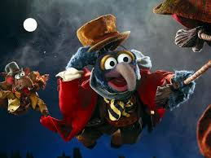

The holidays are always a special time for me and my family. The three main holidays I celebrate during the winter are my birthday, Christmas, and New Years. During these times, my family and I become reunited, and I get into fights with my four sibilings, eat cookies for two meals of the day, and neglect any form of excercise for almost a whole month. My favorite family tradition that we do is watch A Muppets Christmas Carol on Christmas Eve.